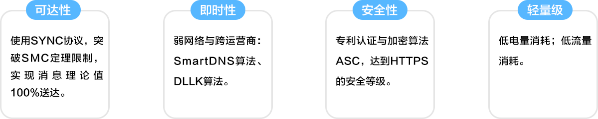
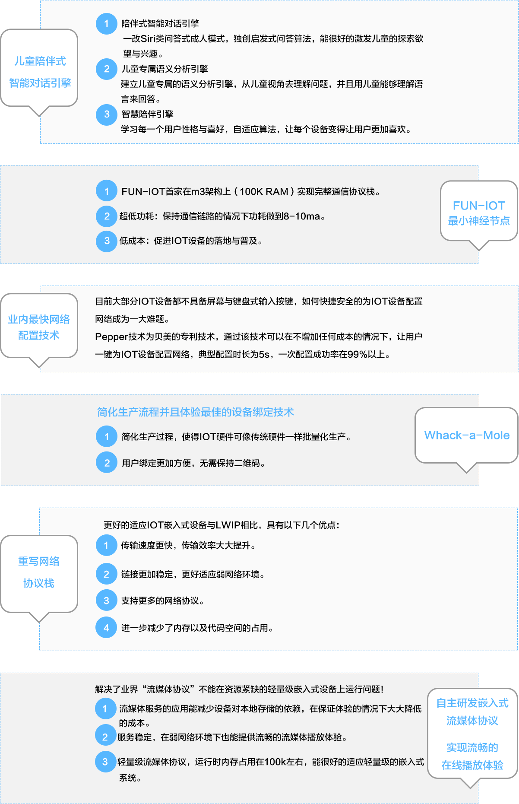
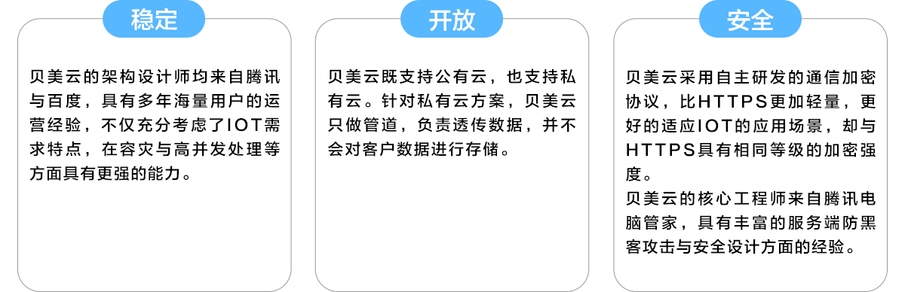

一、IOT神经网络核心能力
贝美建立了全新的IOT神经网络，全面覆盖Remote与Local场景，解决了MQTT协议自身服务质量差、安全性弱、可扩展性差、服务端不开源等问题。

二、贝美IOT核心服务组件
贝美专门成立的Pepper实验室研发出多项专利技术解决IOT设备交互体验问题，并将此能力打包成IOT核心服务组件开放给合作伙伴。

三、贝美开放式云服务
业界领先的IOT云架构设计；微信级的稳定性与安全性。

四、动态化APP生成库
贝美客户端团队来自腾讯微信，在架构设计、用户体验、稳定性、流量控制、弱网络等方面具有业界领先的技术和经验。
提供APP技术服务的两种方式：
1、SDK：包含基础功能组件与基础GUI，客户可根据自己的需求进行裁剪。
2、提供定制化的APP，只需要勾选功能项，即可动态化生成定制APP，为客户提供交钥匙的方案。
五、多平台硬件方案
多平台、多OS适配。
贝美Fun-IOT 技术平台已经完成对多个硬件方案与OS的适配，客户可以根据自己的需求在多个方案中进行选择。
目前适配的硬件方案包括：
1）新唐平台
2）MTK功能机平台
3）RealTekIOT平台
目前适配的OS方案包括：1）Linux2）RTOS3）Android